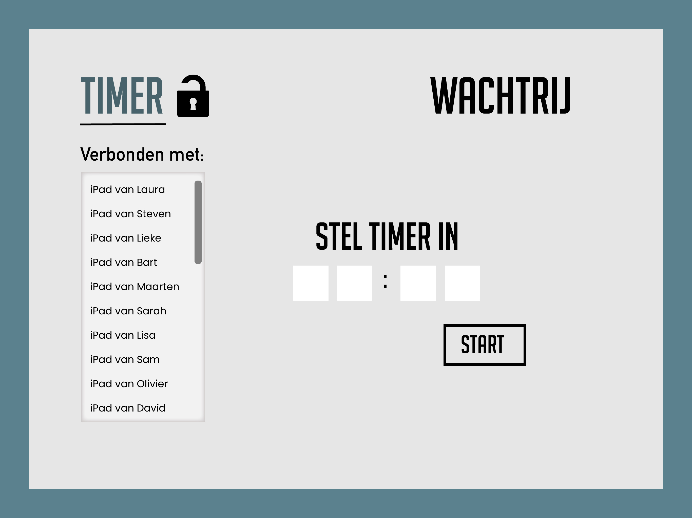
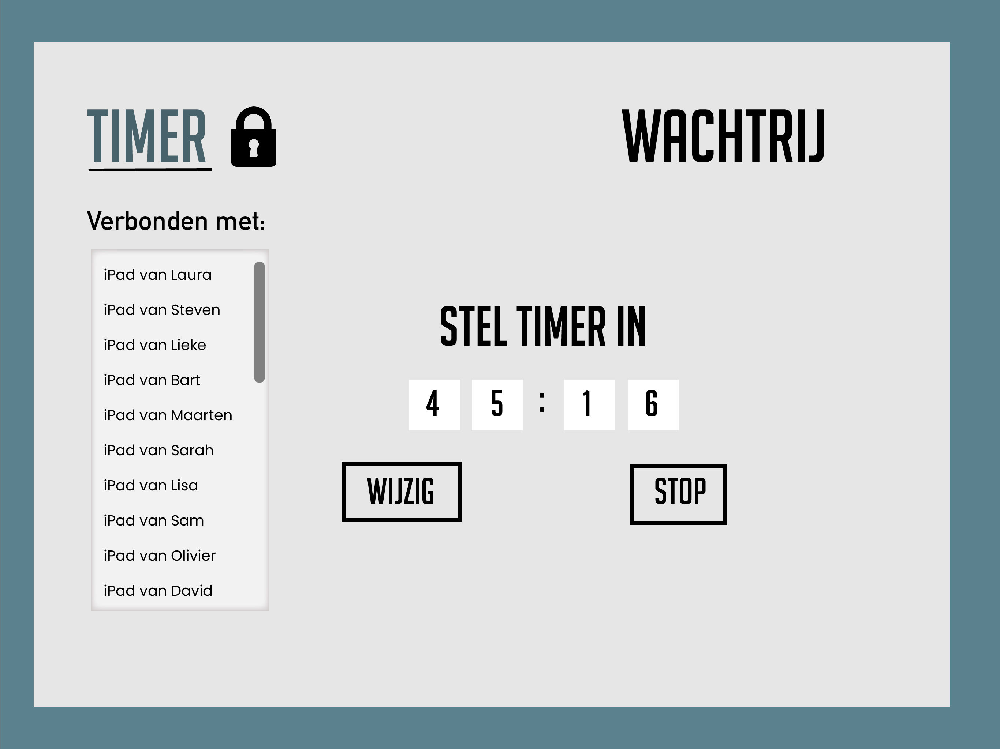
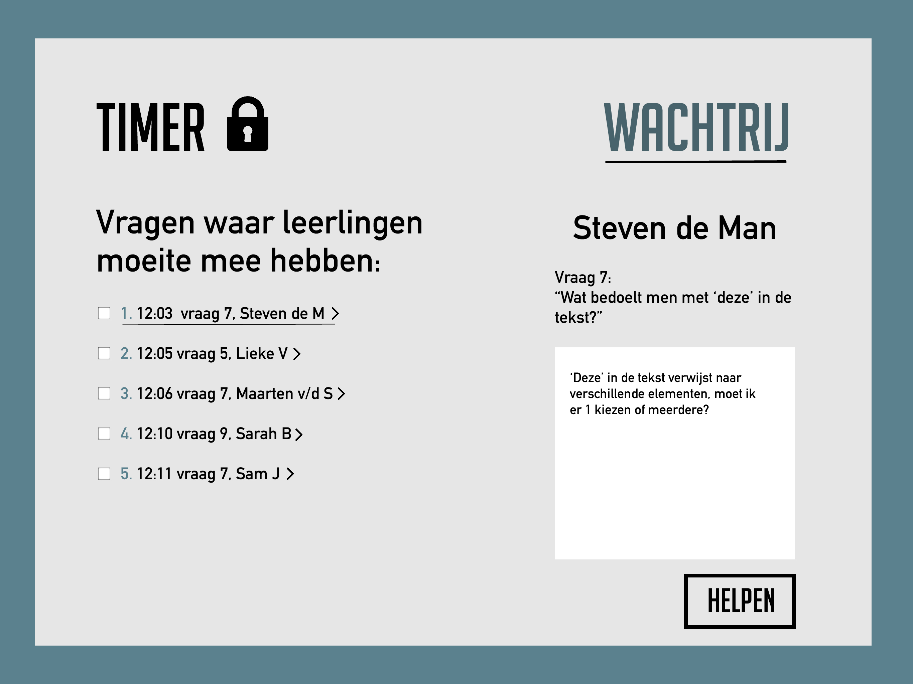
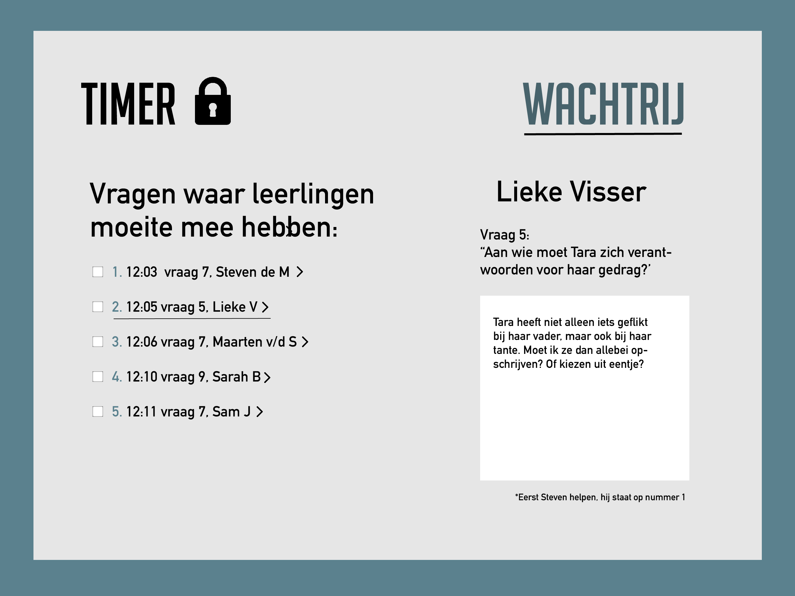
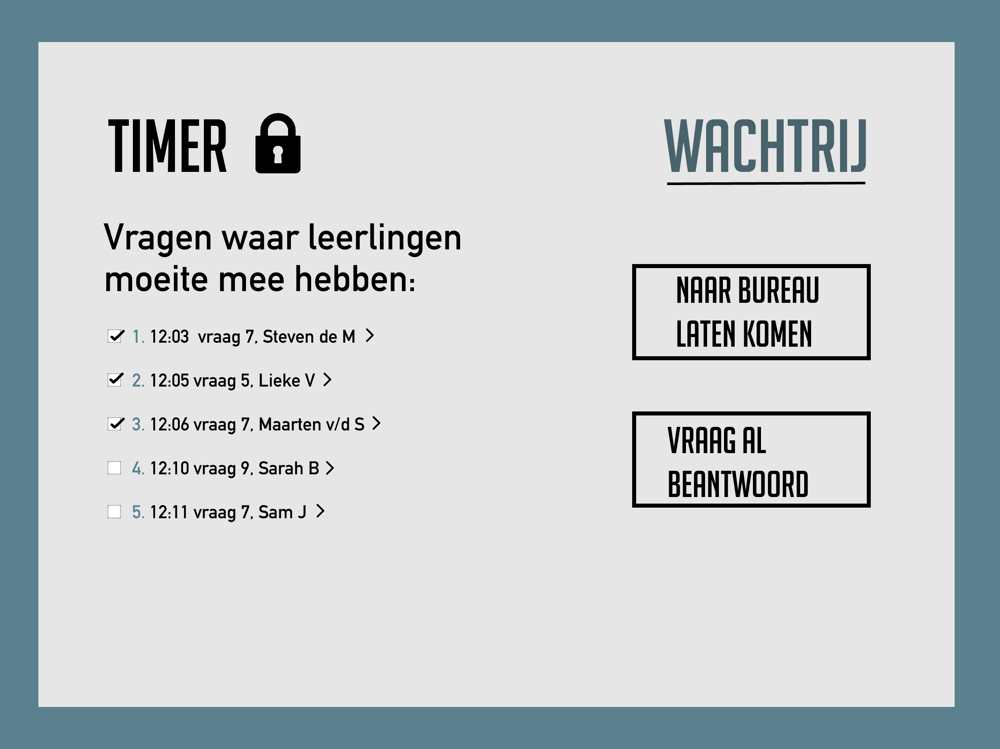
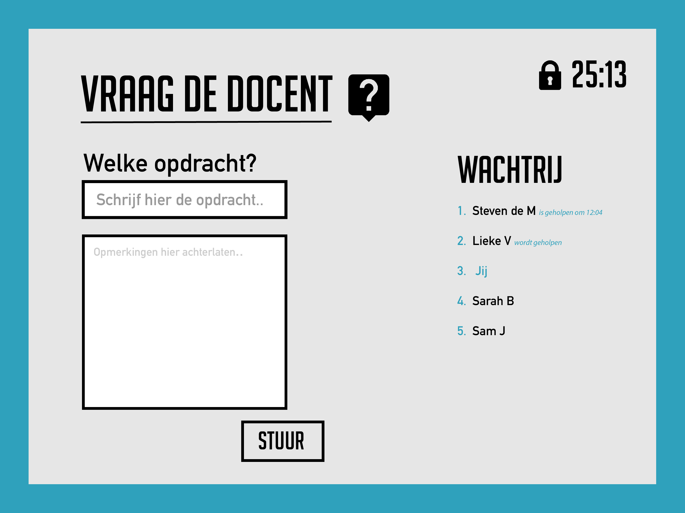
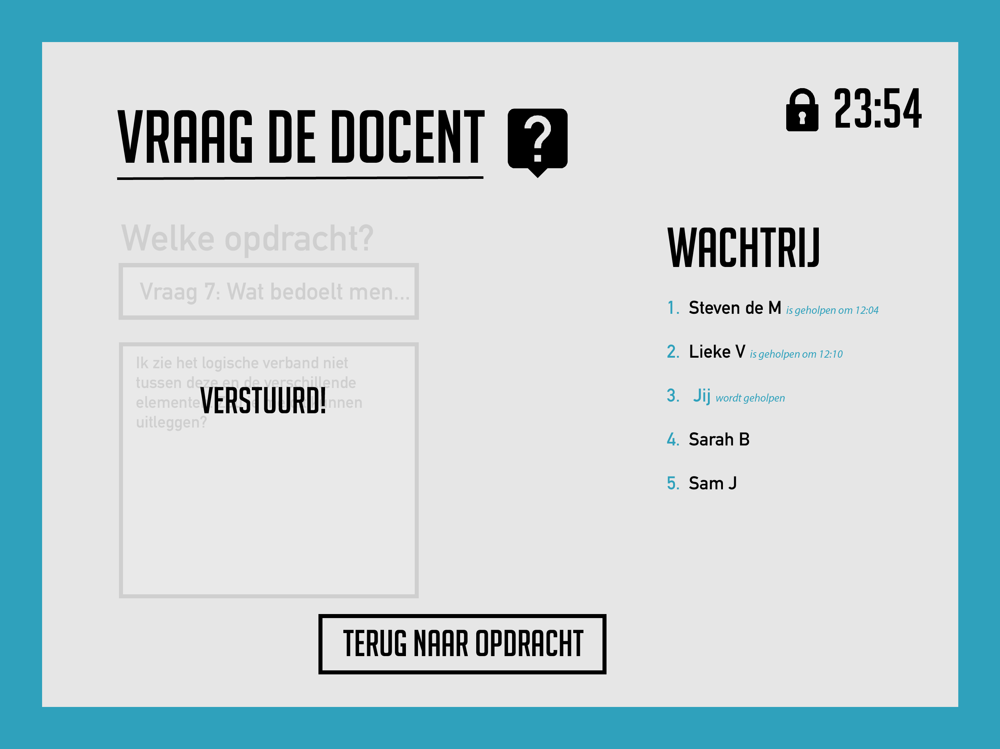

Stappenplan LockBlock
Leraar
-
1. Begin van de les
Wanneer de leerlingen het klaslokaal inkomen, verbinden hun iPads automatisch met die van de docent(e).

Deze verbinding tussen de iPads zal ook weer afbreken na die periode. De docent(e) stelt dan een tijd op de timer in.
Stel de les is 50 minuten lang, dan kan de leraar/lerares ervoor zorgen dat er een timer komt van 45 minuten. Deze timer zorgt ervoor dat er een slot valt op alle social media apps die op de iPads staan van de scholieren. De timer loopt dan af. -
2. Tijdens de les
Is de timer ingesteld dan valt het icoon slotje naast het kopje ‘Timer’ dicht, zo weet de leraar altijd wanneer de timer wel en niet aanstaat. De timer kan ten alle tijden gewijzigd worden, door op de button: ‘wijzig’ te klikken of gestopt worden.
 -
3. Tijdens de les
Wanneer de timer is ingesteld, kan de docent(e) op het kopje: ‘Wachtrij’ klikken. Daarin verschijnen alle leerlingen die vastlopen bij een bepaalde opdracht en dat hebben aangegeven. Daarbij verschijnt de tijd, welke opdracht en de naam van de leerling. Klik je op die info dan verschijnt er meer informatie. Zoals waar ze precies een vraag over hebben.
 -
4. Tijdens de les
Klikt de leraar/lerares op de tweede in de wachtrij, kan hij/zij ook de verdere informatie zien van die leerling. Maar de docent(e) kan degene niet gelijk helpen. Eerst moet de eerste in de wachtrij geholpen zijn, zie melding, zo blijft het eerlijk en kunnen er geen ‘lievelingetjes’ ontstaan.
 -
5. Tijdens en eind van de les
Stel drie leerlingen lopen vast bij een bepaalde vraag, kan de docent(e) ervoor kiezen om meerdere mensen tegelijkertijd te helpen. De docent(e) kan meerdere aanvinken, waarbij er twee buttons verschijnen. Als de leraar/lerares meerdere scholieren wil helpen, is de optie: naar bureau laten komen, het beste.

Maar ook kan de docent ervoor kiezen op het klassikaal te bespreken. Dit zal hij/zij mondeling moeten verwoorden aan de klas. En daarna alle vragen wegvinken die klassikaal beantwoord zijn.
Leerling
-
1. Begin van de les
Komt een leerling niet uit een bepaalde vraag, dan klik je op het vraagteken naast de opdracht. Vervolgens wordt de leerling doorgestuurd naar dit scherm. Hier kan hij/zij aangeven bij welke opdracht hij/zij vast loopt. Daarnaast ziet de leerling na het versturen van de vraag aan de leraar, hoeveelste hij/zij in de wachtrij is. Ook kan de leerling rechtsboven in zien op hoeveel minuten en seconden de timer staat. Deze timer loopt af.
 -
2. Tijdens de les
Je ziet hoelaat de vorige klasgenoot is geholpen. Dan kan je ongeveer een inschatting maken over hoeveel tijd jij wordt geholpen.

Daarna kan je door te klikken op de button, terug naar de opdracht. Om vervolgens verder te werken aan iets wat de leerling nog wel kan doen.